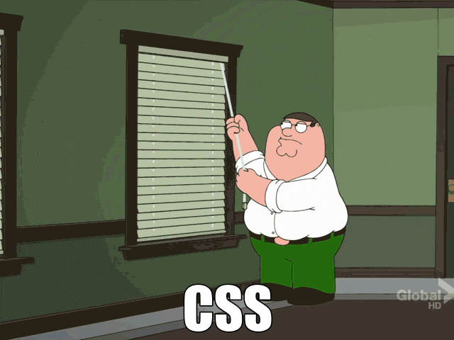

Digital Horology
I started getting ads for Klydoclock on Instagram. The product looks really neat:
I love the idea of a digital pendulum clock. I figured it would make for a cool DIY project: implement the clock display, then run it on a cheap tablet I can stick in a box. Of course, the Klydo folks build a cool product, working with multiple artists for the various clock faces, and, from what I can tell based on the videos, it's a polished product. I'm not trying to dunk on their hard work. I was simply intrigued by how one would go about implementing a pendulum clock.
I spent a couple of days playing with how I would implement something like this. Here's what I have so far:
This was built with a little bit of HTML, some CSS, and a dash of JavaScript. I have a love-hate relationship with CSS. From centering a div, to debugging obscure layout issues, I always think of this GIF:

That said, it's incredible how much one can achieve with CSS. In this blog post,
I'll go over the clock implementation. I'll show some inline renderings of the
clock, tweaked to be embedded inside this post. The original, unmodified source
code is at https://github.com/vladris/vladris.github.io/tree/master/clock, and
live at https://github.com/vladris/clock/. For example, a notable difference
in the original implementation is sizes are specified in vh units, as I built
it for full-screen rendering, but for the clocks embedded in this post the CSS
uses px units. The code snippets are taken from the original implementation,
so view source won't be as helpful. Now let's build a clock!
Pendulum
The most notable feature of the clock is the pendulum. I implemented this as 4 divs:
<div id="bottom-circle" class="circle">
<div class="pendulum">
<div class="pendulum-line"></div>
<div class="pendulum-circle"></div>
</div>
</div>
The circle class is just to make the div render as a circle, which we can do
with CSS like this:
.circle {
border-radius: 50%;
}
The bottom-circle further configures this:
#bottom-circle {
width: 25vh;
height: 25vh;
position: relative;
overflow: hidden;
}
We want a set height and width for it, and we want anything that ends up outside of the circle to be hidden.
Now here comes the fun part: the pendulum itself. The pendulum consists of a line and a circle, wrapped inside a container div:
.pendulum {
position: absolute;
top: -21vh;
left: 50%;
height: 44.5vh;
transform: translateX(-50%);
}
.pendulum-circle {
width: 22vh;
height: 22vh;
border-radius: 50%;
box-shadow: 0 10px 20px rgba(0 0 0 / 50%);
position: absolute;
bottom: 0;
left: 50%;
transform: translateX(-50%);
}
.pendulum-line {
width: 2vh;
height: 35vh;
top: 0;
left: 50%;
position: absolute;
transform: translateX(-50%);
}
The divs have left: 50% and transform: translateX(-50%). This centers them
inside their container. The box-shadow adds a nice shadow effect. Here's what
we have so far:
And here comes the swing animation:
.pendulum {
...
animation: swing 2s infinite ease-in-out;
transform: translateX(-50%);
}
@keyframes swing {
0% {
transform: rotate(-5deg);
}
50% {
transform: rotate(5deg);
}
100% {
transform: rotate(-5deg);
}
}
This applies a swing animation to the pendulum, which rotates the whole
thing by 5 degrees on each side:
The trick
to it is the pendulum top is high outside the circle. The animation
is anchored there (transform-origin: top) and the motion itself is only 5
degrees each way.
Clock face
The top part of the clock looks like this:
<div id="top-circle" class="circle">
<div class="clock">
<div class="hand" id="hour-hand"></div>
<div class="hand" id="minute-hand"></div>
<div class="pin"></div>
</div>
</div>
The classic typeface is called Breguet, named after the luxury watch company that introduced it. Luckily, I found a free SVG with a Breguet dial:

We can use this as the background of the top circle:
#top-circle {
background-size: cover;
background-image: url("breguet.svg");
}
The nice thing about SVGs is they scale very smoothly.
We need hour and minute hands, and also a pin
in the middle. We already
saw these in the clock top HTML:
<div id="top-circle" class="circle">
<div class="clock">
<div class="hand" id="hour-hand"></div>
<div class="hand" id="minute-hand"></div>
<div class="pin"></div>
</div>
</div>
The styling for the clock face:
#top-circle {
width: 50vh;
height: 50vh;
margin-bottom: 5vh;
position: relative;
background-size: cover;
background-image: url("breguet.svg");
}
.clock {
position: absolute;
width: 100%;
height: 100%;
border-radius: 50%;
top: 50%;
left: 50%;
transform: translate(-50%, -50%);
}
.pin {
width: 0.5vh;
height: 0.5vh;
border-radius: 50%;
position: absolute;
top: 50%;
left: 50%;
transform: translate(-50%, -50%);
}
.hand {
position: absolute;
box-shadow: 0 0 10px rgba(0 0 0 / 50%);
stroke-width: 100;
top: 50%;
left: 50%;
border-radius: 1vh;
transform: translate(-50%, -15%);
}
#hour-hand {
height: 17vh;
width: 1.8vh;
transform-origin: 50% 15%;
}
#minute-hand {
height: 22vh;
width: 1.2vh;
transform-origin: 50% 15%;
}
This looks like a lot but it really isn't: we center the clock with
left: 50%; top: 50%; transform: translate(-50%, -50%). We do the same
with the pin, this is just a small circle at the very center of the clock.
The hour and minute hands are similarly centered, with a slightly different
translate: translate(-50%, -15%) - we want them to look like the pin
goes through them at 15% of their length. We also add shadows to the hands.
Almost done! The only thing we need to do is show the time. This is where the bit of JavaScript comes in:
function updateClock() {
const now = new Date();
const minutes = now.getMinutes();
const hours = now.getHours();
const minuteDegree = (minutes / 60) * 360 + (seconds / 60) * 6 + 180;
const hourDegree = (hours / 12) * 360 + (minutes / 60) * 30 + 180;
document.getElementById(
"minute-hand"
).style.transform = `translate(-50%, -15%) rotate(${minuteDegree}deg)`;
document.getElementById(
"hour-hand"
).style.transform = `translate(-50%, -15%) rotate(${hourDegree}deg)`;
}
setInterval(updateClock, 1000);
updateClock();
We implement an updateClock() function that gets the current time and rotates
the hands. We compute how many degrees we want the minute hand and the hour hand
to be rotated by:
const minuteDegree = (minutes / 60) * 360 + (seconds / 60) * 6 + 180;
const hourDegree = (hours / 12) * 360 + (minutes / 60) * 30 + 180;
Note the minute hand also takes into account the seconds while the hour hand takes into account the minutes, to ensure smooth movement.
We then get the minute-hand and hour-hand elements and update their
transform to include a rotate by the determined number of degrees.
We use setInterval() to run updateClock every second. And that's it!
Skins
Since all the styling is done with CSS, it's very easy to provide multiple skins for it, much like Klydo does. Here's a Mickey Mouse version:
In fact, in my original implementation I have several clock faces, each coming
with a set of color customizations and a background image for the clock. The
following JavaScript looks for a style query parameter and loads the specified
CSS file:
function loadCSSFromQueryParam() {
const urlParams = new URLSearchParams(window.location.search);
const style = urlParams.get("style") ?? "breguet";
const styleParam = `${style}/style.css`;
if (styleParam) {
const link = document.createElement("link");
link.rel = "stylesheet";
link.href = styleParam;
document.head.appendChild(link);
}
}
loadCSSFromQueryParam();
The default is breguet, loading the Breguet dial, but using style=mickey in
https://vladris.com/clock/?style=mickey loads the Mickey Mouse face.
Conclusions
CSS is still very cumbersome, but it's impressive how easy it is to achieve
quite complex effects with it. Adding a subtle shadow can be done with a
box-shadow one-liner. The pendulum animation is a simple rotate
transform with 3 keyframes:
@keyframes swing {
0% {
transform: rotate(-5deg);
}
50% {
transform: rotate(5deg);
}
100% {
transform: rotate(-5deg);
}
}
Similarly, having the hands point to the right time is just another rotate.
Quite nice!
The full implementation we went over is here.